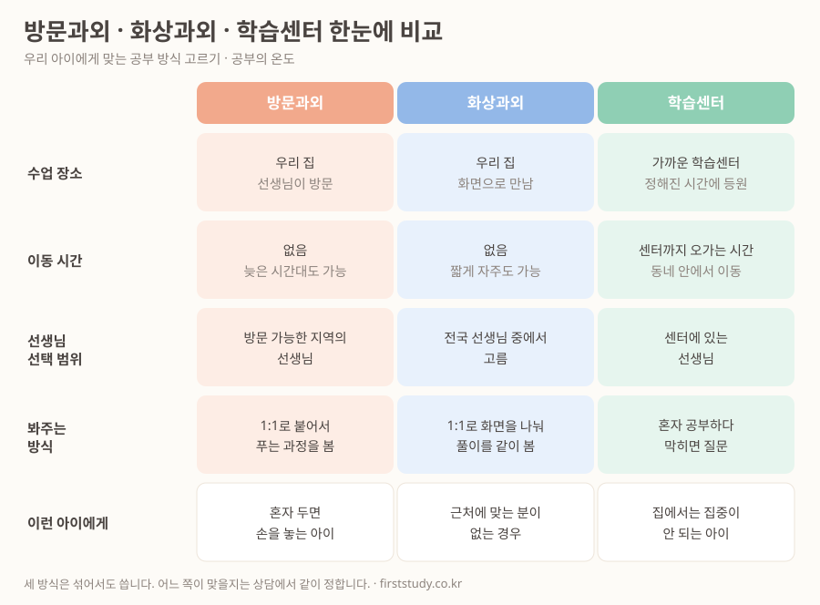

상담에서 가장 많이 듣는 질문입니다. "방문이 나아요, 화상이 나아요?" 셋 중에 더 좋은 게 정해져 있으면 편하겠지만, 그렇지 않습니다. 아이가 어디서 막히는지에 따라 답이 달라집니다.
다섯 가지 기준으로 한 장에 정리했습니다.

표를 읽는 순서
위에서부터 차례로 보는 것보다, 맨 아래 "이런 아이에게" 줄부터 보시는 편이 빠릅니다. 우리 아이에 해당하는 칸을 찾고, 그 열을 위로 훑어 올라가면 됩니다.
- 혼자 두면 손을 놓는 아이라면 방문과외입니다. 옆에 사람이 앉아 있는 것 자체가 장치가 됩니다.
- 근처에 맞는 선생님이 없는 경우라면 화상과외입니다. 지역이라는 조건을 빼면 고를 수 있는 사람이 훨씬 많아집니다.
- 집에서는 집중이 안 되는 아이라면 학습센터입니다. 공부하는 자리와 시간을 밖에서 만들어 주는 방식입니다.
자주 오해하시는 두 가지
첫째, 화상과외가 방문보다 덜 본다고 생각하십니다. 실제로는 둘 다 1:1이고, 화면을 나눠 쓰기 때문에 아이가 푸는 과정을 그대로 봅니다. 차이는 보는 정도가 아니라 고를 수 있는 선생님의 범위와 시간을 쪼개 쓰는 자유도에 있습니다.
둘째, 학습센터를 과외의 저렴한 대체품으로 보십니다. 하는 일이 다릅니다. 학습센터는 설명을 듣는 곳이라기보다 스스로 푸는 시간을 확보하는 곳입니다. 설명은 이미 학교와 학원에서 충분히 듣는데 혼자 풀 시간이 없어 점수가 안 오르는 아이가 꽤 많습니다.
설명이 부족한 아이와, 혼자 풀 시간이 부족한 아이는 처방이 반대입니다. 같은 것을 더 하면 더 안 됩니다.
섞어서도 씁니다
한 가지만 골라야 하는 것도 아닙니다. 실제로는 이렇게들 쓰십니다.
- 주 1회 과외 + 평일 학습센터 — 배우는 건 선생님에게, 푸는 건 센터에서. 시간 관리가 안 되는 아이에게 자주 씁니다.
- 주중 화상 + 시험 기간만 방문 — 평소엔 짧게 자주, 시험 앞에서는 붙어서. 이동 시간을 아끼는 방식입니다.
- 과목별로 다르게 — 손이 많이 가는 과목은 방문, 정리만 필요한 과목은 화상으로 나눕니다.
다만 처음부터 여러 개를 붙이는 건 권하지 않습니다. 무엇이 효과가 있었는지 알 수 없게 되기 때문입니다. 하나로 시작해 한 번의 시험을 보고 더할지 정하는 편이 낫습니다.
고르기 어려우면 같이 정합니다
표를 봐도 우리 아이가 어느 칸인지 애매하실 수 있습니다. 그럴 때는 지난 시험지 한 장이 가장 정확한 자료입니다. 어디서 점수가 빠지는지 보면 방식이 대체로 갈립니다.
상담은 무료이고, 신청하신다고 해서 수업을 시작해야 하는 것은 아닙니다.
무료 상담 신청하기위 그림은 공부의 온도에서 운영하는 세 가지 수업 방식을 정리한 것입니다. 출처를 밝히시면 자유롭게 옮겨 쓰셔도 됩니다.